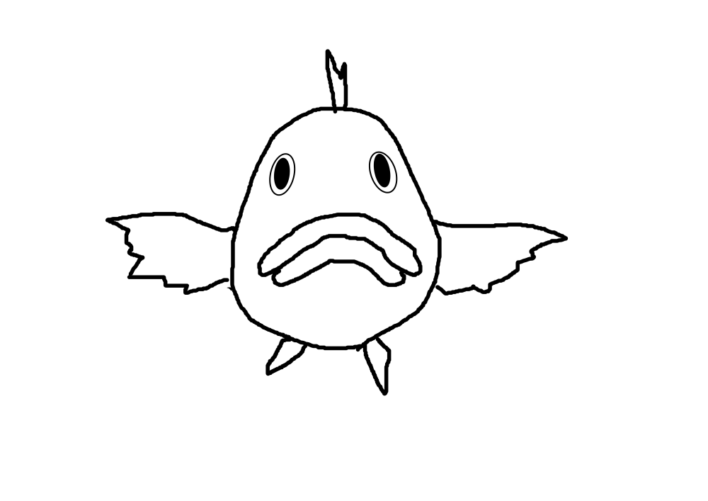

Kato no Matome

いままでやったことのまとめです。
ROS, Unity, AR, など
Hatena Blog はじめました。技術的なことはこちらで。
YKpages - Hatena Blog
目次
リンク
Githubのページへ（意見・質問などはこちらで）YKpages - Hatena Blog（技術的なことはこちら）
トップ | 更新情報 | 雑談 | Githubページ
Copyright © 2017 Yusuke Kato, All rights reserved.
License : MIT